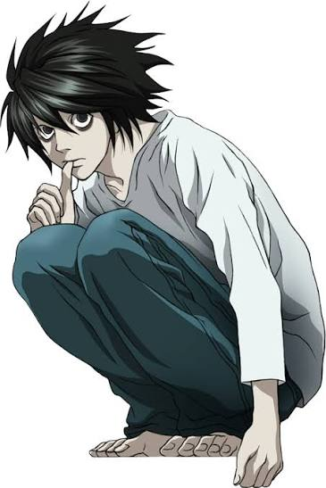
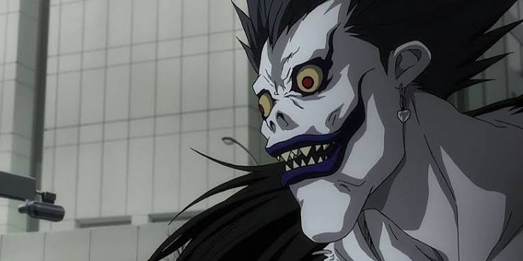

Two Minds. One Ultimate Game of Justice.
High school student Light Yagami discovers a supernatural notebook that allows him to kill anyone by writing the victim's name while picturing their face. The story follows his attempts to become a god by creating a New World cleansed of evil by using the notebook, and the complex conflict between himself and all those who try to stop or help him.
The Psychological War
Light Yagami
It is not our business to debate whether Kira evil or not. That is up to the public and philosophers to decide. We've got no choice but to catch Kira. If Kira is caught, then the world will be in chaos again, but don't think about that. Good or evil... Everything depends on the results. If we catch Kira, then Kira is evil. If Kira rules the world, then Kira is good.

L. Lawliet
Kira is childish, and he hates losing. You guessed it... I'm also childish and hate losing....

Ryuk
Why did I drop the DeathNote? Because I was bored, that's why.